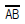
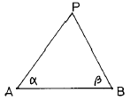
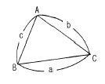
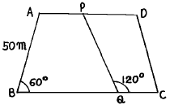
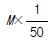
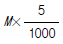
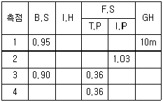
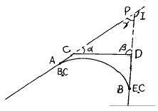

지적기사 (2004-03-07 기출문제)
1과목: 지적측량
1. 지적삼각점 성과표에 기록, 관리하는 사항이 아닌 것은?
- 부호 및 위치의 약도
- 지적삼각점의 명칭과 기준원점명
- 소재지와 측량연월일
- 시준점의 명칭, 방위각과 거리
(정답률: 20%)

2. 좌표계의 투영식 중 우리나라 지적법 상에 적용하고 있는 것은?
- 가우스도법
- 가우스-쿠르거도법
- 벳셀도법
- 가우스상사 이중투영도법
(정답률: 알수없음)
3. 다음 삼각형에서 BP거리를 산출한 값으로 맞는 것은?(단, α =77° 20′ 42″ , β =56° 20′ 28″ ,

=2886.84m)
- 3322.85m
- 3645.10m
- 3895.14m
- 4156.80m
(정답률: 알수없음)
4. 지적삼각측량에서 수평각의 측각공차의 규정으로 틀린것은?
- 1방향각 : 30″ 이내
- 1측회의 폐색 : ± 30″ 이내
- 기지각과의 차 : 30″ 이내
- 내각 관측치의 합과 180° 와의 차 : ± 30″ 이내
(정답률: 알수없음)
5. 지적삼각보조측량을 다각망 도선법에 의하여 시행할 경우 1도선의 점수는 몇 점 이하로 하는가?
- 기지점 교점을 포함하여 5점 이하
- 기지점 교점을 포함하여 10점 이하
- 기지점 교점을 포함하여 15점 이하
- 기지점 교점을 포함하여 20점 이하
(정답률: 알수없음)
6. 삼각망 중에서 가장 정도가 높은 망은?
- 단열 삼각망
- 유심다각망
- 사변형 삼각망
- 삼각쇄
(정답률: 알수없음)
7. 지적도근측량의 방위각법에서 연결오차의 배부는?
- 방위각의 크기에 비례하여 배부한다.
- 종횡선차의 크기에 비례하여 배부한다.
- 측선장의 크기에 비례하여 배부한다.
- 측선장의 변장반수에 비례하여 배부한다.
(정답률: 알수없음)
8. 경위의측량방법에 의한 세부측량의 관측방법을 설명한 것으로 틀린 것은?
- 미리 각 경계점에 표지를 설치한다.
- 관측은 20초독 이상의 경위의를 사용한다.
- 도선법 또는 방사법에 의한다.
- 연직각의 관측은 교차가 30초 이내인 때 그 평균치를 연직각으로 한다.
(정답률: 알수없음)
9. 경계점좌표등록부 시행지역의 지적도근점의 측량성과와 검사성과의 연결교차가 얼마 이내일 때에 잘못이 없는 것으로 인정하는가?
- 0.15m 이내
- 0.20m 이내
- 0.25m 이내
- 0.30m 이내
(정답률: 알수없음)
10. 다음 중 측판측량의 결과 작성한 도형에 생기는 오차의 가장 큰 원인은?
- 측판이 수평으로 되지 않을 때
- 앨리데이드의 시준오차
- 앨리데이드의 조정이 불충분할 때
- 측판의 표정이 올바르지 않을 때
(정답률: 알수없음)
11. 측판측량방법에 의한 세부측량을 도선법으로 시행할 경우 19변일 때 도상에서의 허용 폐색오차는?
- 2.0㎜ 이하
- 1.8㎜ 이하
- 1.6㎜ 이하
- 1.4㎜ 이하
(정답률: 알수없음)
12. 경계점좌표등록부 시행지역에서 분할, 합병 등으로 경계가 변동되었을 경우에 관한 설명 중 옳지 않은 것은?
- 합병된 경우 경계점좌표등록부에 합병되는 필지의 좌표와 부호도 및 부호를 새로이 정리한다.
- 부호도의 경계점 부호는 오른쪽 위에서부터 왼쪽으로 경계를 따라 연속으로 부여한다.
- 분할된 경우 부호도 및 부호에는 새로이 생긴 경계점의 부호를 부여한다.
- 합병으로 말소된 필지의 경계점좌표등록부도 지번순으로 함께 보관한다.
(정답률: 알수없음)
13. 다음 삼각형의 면적은 얼마인가?(단, a = 30.28m, b = 32.58m, c = 27.66m 임)

- 493.32m2
- 388.98m2
- 393.38m2
- 293.35m2
(정답률: 알수없음)
14. 다음 그림에서 AD//BC 일 때 PQ의 길이는?

- 60m
- 50m
- 80m
- 70m
(정답률: 알수없음)
15. 지적측량에 대한 다음 설명으로 가장 거리가 먼 것은?
- 일필지의 경계와 면적을 측정한다.
- 행정처분에 따른 기속측량이다.
- 기초측량과 세부측량으로 구분한다.
- 안정성 진단을 위한 시설물측량이다.
(정답률: 알수없음)
16. 다음 중 지적측량의 방법에 따른 구분이 아닌 것은?
- 기초측량
- 경위의측량
- 위성측량
- 측판측량
(정답률: 알수없음)
17. 방위각이 230° 인 측선의 종졺횡선 부호로 알맞은 것은?
- ＋, ＋
- ＋, －
- －, ＋
- －, －
(정답률: 알수없음)
18. 전자면적측정기로 면적을 측정할 때에 2회 측정한 면적의 교차에 대한 허용면적은? (단, Μ : 축척분모, F : 2회 측정한 면적의 평균)

- 0.0232· M·√F
- 0.0262· M·√F

(정답률: 알수없음)
19. 토지이동정리를 할 경우 면적측정을 하지 않아도 되는 경우는?
- 지적공부를 복구하는 경우
- 축척을 변경하는 경우
- 경계를 정정하는 경우
- 일필지의 지목을 변경하는 경우
(정답률: 알수없음)
20. 측량준비도 작성시 틀리게 연결된 것은?
- 측량기준점 - 검은색
- 도곽선 수치 - 붉은색
- 보정계수 - 붉은색
- 측량기준점간 거리 - 붉은색
(정답률: 알수없음)
2과목: 응용측량
21. 다음 중 지형도의 이용방법으로 가장 거리가 먼 것은?
- 연직단면의 작성
- 면적의 도상 측정
- 저수용량, 토공량의 산정
- 고도의 정밀 측정
(정답률: 알수없음)
22. 원심력에 의한 곡선부의 차량탈선을 방지하기 위하여 곡선부의 횡단노면 외측부를 높여주는 것은?
- 확폭
- 캔트
- 종거
- 완화구간
(정답률: 알수없음)
23. 다음 수준 측량에 있어서의 야장 기입법에서 중간점 (I.P)이 많을 때 가장 편리한 것은?
- 기고식
- 고차식
- 승강식
- 2난식
(정답률: 알수없음)
24. 기설의 기준점만으로 세부측량을 실시하기에 부족할 경우 기설기준점을 기준으로 지형측량에 필요한 새로운 측점을 관측하여 결정된 기준점은?
- 도근점
- 경사변환점
- 등각점
- 이점
(정답률: 알수없음)
25. 축척 1/50,000의 지형도를 작성할 때 표고 135.45m인 산 밑에서 표고 428.76m인 산정 사이에 몇 개의 주곡선을 삽입해야 하는가? (단, 주곡선과 계곡선이 겹치는 부분까지 개수에 포함)
- 17개
- 16개
- 15개
- 14개
(정답률: 알수없음)
26. 사진의 크기가 23㎝ x 23㎝이고 두 사진의 주점기선의 길이가 10㎝이었다. 이 때의 종중복도는?
- 약 43%
- 약 57%
- 약 64%
- 약 78%
(정답률: 알수없음)
27. 다음 수준측량 야장에서 측점 4의 지반고는 얼마인가?

- 9.92m
- 10.53m
- 10.56m
- 10.59m
(정답률: 알수없음)
28. 두 직선의 교각(I)이 90° 이다. 두 직선 사이에 단곡선을 설치하려고 할 때 외할(E)이 25m라고 하면 곡선 반경은 얼마인가?
- 35.6m
- 46.2m
- 60.4m
- 93.7m
(정답률: 알수없음)
29. 터널을 만들기 위하여 A, B 두점의 좌표를 측정한 결과 XA= +1000.00m, YA= +250.00m, B점은 XB= +1500.00m, YB= +1000.00m 이었면 AB 의 방위각은?
- 56° 18' 36"
- 33° 41' 24"
- 232° 25' 53"
- 322° 25' 53"
(정답률: 알수없음)
30. 천체의 위치를 고도각와 방위각으로 나타내는 좌표는?
- 지평좌표
- 적도좌표
- 황도좌표
- 은하좌표
(정답률: 알수없음)
31. 수직항공사진으로부터 작성한 축척 1/8,000의 지도가 사진으로부터 3.5배 확대된 것이라고 할 때 초점거리 152.4㎜인 사진기를 사용했다면 사진측량을 위한 비행고도는?
- 2219.2m
- 3469.8m
- 4267.2m
- 5364.3m
(정답률: 알수없음)
32. 하천의 수위에 대한 설명 중 맞는 것은?
- 평균최저수위는 1년 동안 그 수위 이하로 내려가는 것이 10일 이내인 수위를 말한다.
- 평수위는 어느 기간 동안 관측된 수위의 합을 관측횟수로 나눈 평균값을 말한다.
- 평균고수위는 어느 기간에 있어서의 평균수위 이상의 수위에 대한 평균값을 말한다.
- 평균수위는 어떤 기간에 있어서의 수위 중 이것보다 높은 수위와 낮은 수위의 관측횟수가 같은 수위를 말한다.
(정답률: 알수없음)
33. 폭 120m의 하천을 횡단하여 정밀하게 수준측량을 실시할 때 가장 좋은 방법은?
- 교호수준측량에 의해 실시
- 삼각수준측량에 의해 실시
- 시거측량에 의해 실시
- 양봉의 수면으로부터의 높이로 고저차를 구함
(정답률: 알수없음)
34. 다음 중 적경(赤經)을 가장 잘 설명한 것은?
- 어느 천체를 포함하는 수직권을 따라 그 천체까지 지평선에서 측정한 각거리
- 관측자의 자오선과 어느 천체의 수직권사이의 지평선 상에서 측정한 각거리
- 춘분점을 지나는 시간권으로부터 적도면을 따라 동쪽으로 측정한 각거리
- 어느 천체를 포함하는 시간권을 따라 적도로부터 그 천체까지 측정한 각거리
(정답률: 알수없음)
35. 그림의 AB간에 곡선을 설치하고자 하였으나 교점(P)에 접근할 수 없어 ∠ACD=140° ,∠CDB=90° 및 CD=200m 를 측정하였다. C점에서 B.C점까지의 거리는 얼마인가? (단,곡선반경 R은 300m임)

- 643.35m
- 261.68m
- 382.27m
- 288.66m
(정답률: 알수없음)
36. 사진측량학(photogrammetry)의 어원과 관계가 먼 것은?
- 광(光)
- 형상
- 투영
- 관측
(정답률: 알수없음)
37. 용지경계와 용지 면적을 산출함으로써 지가 보상 등의 자료로 사용할 목적으로 실시하는 노선 측량 작업은?
- 다각측량
- 용지측량
- 공사측량
- 조사측량
(정답률: 알수없음)
38. 초점거리 150 mm, 축척 1/10,000로 촬영한 연직사진에서 종중복도 50%, 화면의 크기 23 × 23cm일 때 기선고도비는 얼마인가?
- 0.667
- 0.767
- 0.678
- 0.797
(정답률: 알수없음)
39. 갱내에서 A점의 좌표가 (1328.0m,810.0m,86.3m), B점의 좌표가 (1734.0m,589.0m,112.4m)일 때 A, B점을 연결하는 갱도를 굴진하는 경우 이 갱도의 경사거리는?
- 341.5m
- 363.1m
- 421.6m
- 463.0m
(정답률: 알수없음)
40. 원격측정 자료변환체계(data handling system)의 경로로 옳은 것은?
- 자료수집-자료압축-자료변환-라디오매트릭보정-판독
- 자료수집-자료변환-자료압축-판독-라디오매트릭보정
- 자료수집-자료변환-라디오매트릭보정-자료압축-판독
- 자료수집-라디오매트릭보정-자료압축-자료변환-판독
(정답률: 알수없음)
3과목: 토지정보체계론
41. 인구가 일정수를 유지하는 도시 및 지역에 적합하며, 장래 도시인구 예측시 인구증가의 추세가 증감하는 것을 경향곡선으로 표시하는 방법은?
- 등비급수법
- 최소자승법
- 지수성장곡선법
- 로지스틱 곡선법
(정답률: 알수없음)
42. 근린주구에 가장 요구되는 교육시설은?
- 초등학교
- 유치원
- 고등학교
- 도서관
(정답률: 알수없음)
43. 개발제한구역(Greenbelt)의 개념을 도시계획에 최초로 적용한 나라는?
- 영국
- 미국
- 일본
- 독일
(정답률: 알수없음)
44. 래드번(Radburn)계획에 대한 설명으로 옳지 않은 것은?
- 스타인(Clerance Stein)이 계획하였다.
- 주거구는 슈퍼블럭(super block)으로 계획하였다.
- 주택들은 막다른 골목길(cul-de-sac)을 단위로 모아서 배치하였다.
- 보행로와 자동차도로는 분리하였으며, 단지내 통과 교통을 허용하였다.
(정답률: 알수없음)
45. 다음 중 도시재개발의 개발방식에 의한 분류가 아닌것은?
- 철거재개발
- 확장재개발
- 보전재개발
- 수복재개발
(정답률: 알수없음)
46. 다음중 국토이용 및 관리의 기본원칙과 거리가 먼 것은?
- 주거 등 생활환경 개선을 통한 국민의 삶의 질의 향상
- 지역의 정체성과 문화유산의 보전
- 지역내 적정한 기능배분을 통한 사회적 비용의 최대화
- 국민생활과 경제활동에 필요한 토지 및 각종 시설물의 효율적 이용과 원활한 공급
(정답률: 알수없음)
47. 다음 설명중에서 가장 타당한 것은?
- 도시기본계획은 도시관리계획을 실행하기 위한 수단이다.
- 도시관리계획과 도시계획 사업은 엄연히 구분된다.
- 철도, 궤도시설은 기반시설이 아니다.
- 가스 공급설비는 기반시설이 아니다.
(정답률: 알수없음)
48. 도시인구 예측방법 중 도시인구를 변화시키는 경제·사회· 문화의 구성요소들 사이에 존재하는 상호 인과관계를 방정식으로 표현하여 장래 인구를 예측하는 수단으로 삼는 방법은?
- 정주모형에 의한 방법
- 생잔법
- 비교유추법
- 과거추세에 의한 방법
(정답률: 알수없음)
49. 지구단위계획에 포함될 내용이 아닌 것은?
- 지역 지구의 세분 및 기반시설의 배치와 규모
- 경관계획 및 교통처리계획
- 도시자연공원의 배치
- 가구 및 획지의 규모와 조성계획
(정답률: 40%)
50. 도시지역이 지정되면 지역내에서는 개발행위허가를 받아야 하는데 이에 해당사항이 아닌 것은?
- 건축물의 건축 또는 공작물의 설치
- 도시지역내의 토지분할
- 경작을 위한 토지의 형질변경
- 토석의 채취
(정답률: 알수없음)
51. 인간활동의 구조를 중심으로 분류하는 도시의 유형과 거리가 먼 것은?
- 단핵도시
- 위성도시
- 다핵도시
- 대상도시
(정답률: 알수없음)
52. 과거 10년간 등비급수적으로 인구가 증가하여 현재인구 160만이고, 10년전 인구는 100만 인 도시가 있다. 이 도시의 연평균 인구증가율은?
- 1.048%
- 2.048%
- 4.8%
- 5.8%
(정답률: 알수없음)
53. 다음 중 광역도시계획의 수립권자가 될 수 없는 자는?
- 서울특별시장
- 건설교통부장관
- 행정자치부장관
- 경상남도지사
(정답률: 알수없음)
54. 인구구조분석에서 경제인구에 포함되는 연령의 범위로 적합한 것은?
- 10∼60세
- 20∼60세
- 15∼64세
- 20∼65세
(정답률: 알수없음)
55. 다음 중 도시화의 지표라고 볼수 없는 것은?
- 인구의 증감
- 토지이용의 변화
- 도시기능의 증대
- 도시물가의 상승
(정답률: 알수없음)
56. 중심지의 공간분포이론을 제시하여 도시의 분포에 대해서 실증분석한 사람은?
- 하워드(Howard)
- 테일러(Taylor)
- 크리스탈러(Christaller)
- 코르뷔제(Corbusier)
(정답률: 알수없음)
57. 우리 나라 토지이용의 특성이 아닌 것은?
- 자연발생적으로 이용되고 있다.
- 생산과 생활공간을 혼합적으로 이용한다.
- 전근대적인 토지이용과 근대적인 토지이용으로 이중성을 띠고 있다.
- 소규모의 토지는 블록단위로 이용하고 있다.
(정답률: 알수없음)
58. 다음중 용적률을 구하는 식으로 옳은 것은?
- 건축면적/대지면적
- 연상면적/대지면적
- 공지면적/대지면적
- 호수밀도/대지면적
(정답률: 알수없음)
59. 기존도시의 토지이용상 구성비율이 가장 큰 것은?
- 도로
- 주택
- 공업
- 상업
(정답률: 알수없음)
60. 다음은 환지설계시의 체비지에 대한 설명이다. 거리가 먼것은?
- 보유지라고도 한다.
- 사업비 충당을 위해 확보된다.
- 공공시설의 설치를 위해 확보된다.
- 환지에 속하는 것이다.
(정답률: 알수없음)
4과목: 지적학
61. 자연적인 현상에 의하여 해안빈지가 생겼다면 이를 지적공부에 등록하는 토지이동의 종류는?
- 신규등록
- 등록전환
- 분할
- 등록사항정정(경계 및 면적)
(정답률: 알수없음)
62. 다음 중 토렌스 시스템(Torrens system)의 이론적 내용이 아닌 것은?
- 거울이론(Mirror principle)
- 지가이론(Land value principle)
- 커튼이론(Curtain principle)
- 보험이론(Insurance principle)
(정답률: 알수없음)
63. 적극적 등록제도의 설명으로 옳지 않은 것은?
- 토지등록상의 문제로 인한 선의의 제3자를 보호하기 위한 제도는 마련되어 있지 않다.
- 지적공부에 등록되지 아니한 토지는 당해 토지에 대한 어떠한 권리도 인정받지 못 한다.
- 적극적 등록주의의 발달된 형태로 유명한 것이 토렌스시스템(Torrens system)이다.
- 토지등록은 일필지의 개념으로 법적인 권리보장이 인증된다.
(정답률: 알수없음)
64. 역사적으로 초기의 지적제도가 개인에게 인정한 권리는?
- 토지 이용권(利用權)
- 토지 소유권(所有權)
- 토지 관리처분권(管理處分權)
- 토지 물권공시권(物權公示權)
(정답률: 알수없음)
65. 우리나라 지적제도와 등기제도에 대한 설명 중 옳지 않은 것은?
- 지적과 등기 모두 형식주의를 원칙으로 한다.
- 지적은 권리객체, 등기는 권리주체를 다룬다.
- 지적과 등기 모두 실질적 심사주의를 원칙으로 한다.
- 지적은 단독신청, 등기는 공동신청주의를 등록방법으로 한다.
(정답률: 알수없음)
66. 조선시대에 다산 정약용의 양전개정론과 관계가 없는 것은?
- 어린도법
- 경무법
- 망척제
- 방량법
(정답률: 알수없음)
67. 경계의 설명으로 가장 적합하지 않은 것은?
- 지적공부에 등록하는 단위로서 공부상 구획선이다.
- 경계점좌표등록부에 등록된 좌표의 연결이다.
- 경계는 문서상에 있고 경계표지는 지상에 있다.
- 경계는 지상에 있고 경계표지는 도상에 있다.
(정답률: 알수없음)
68. 지적제도(地籍制度)의 특성으로 적합하지 않은 것은?
- 안전성
- 간편성
- 적합성
- 중복성
(정답률: 알수없음)
69. 모든 토지를 지적공부에 등록해야 하고 등록된 토지표시 사항은 항상 실제와 일치하게 유지하는 것을 무엇이라 하는가?
- 적극적 등록주의
- 심사의 형식주의
- 공부의 형식주의
- 당사자 신청주의
(정답률: 알수없음)
70. 다음 중 지적측량을 수반하지 않는 토지이동만으로 연결된 것은?
- 등록전환-지목변경
- 지목변경-합병
- 합병-분할
- 분할-등록전환
(정답률: 알수없음)
71. 현행 지적법상의 면적에 대한 설명 중 옳지 않은 것은?
- 토지의 수평면적을 말한다.
- 토지대장에 등록된 면적이다.
- 경사면을 포함한 실질면적을 말한다.
- m2를 단위로 하여 정한다.
(정답률: 알수없음)
72. 지적 형식주의를 채택하는 이론적 근거로 옳은 것은?
- 등록의 원칙
- 공신의 원칙
- 공시의 원칙
- 소유의 원칙
(정답률: 알수없음)
73. 지적공부에 등록하기 위한 토지표시 사항의 결정권한은?
- 국가공권
- 지방자치권
- 지적직공무원직권
- 측량사 사권
(정답률: 알수없음)
74. 조선 시대의 양전법에 따른 전의 형태에서 직각 삼각형의 전을 지칭하는 것은?
- 방전(方田)
- 제전(梯田)
- 구고전(句股田)
- 규전(圭田)
(정답률: 50%)
75. 다음 중 지적재조사의 효과로 볼 수 없는 것은?
- 지적과 등기의 책임부서를 명백히 할 수 있음
- 국토개발과 토지이용의 정확한 자료제공
- 행정구역의 합리적 조정을 위한 기초자료
- 토지소유권의 공시에 대한 국민의 신뢰확보
(정답률: 알수없음)
76. 지적도나 임야도의 도곽선 역할로서 옳지 않은 것은?
- 지적측량기준점 전개시의 기준
- 도곽신축 보정시의 기준
- 도면접합시의 기준
- 토지합병시의 필지결정기준
(정답률: 알수없음)
77. 지적의 공개주의에서 가장 중요하게 다루어야 할 것은?
- 지적공부의 등록
- 신청 및 신고
- 국가의 결정
- 정보 공개의 제한
(정답률: 알수없음)
78. "지적은 과세의 기초를 제공하기 위하여 한 나라 안의 부동산의 규모과 가치 및 소유권을 기록한 등록이다."라고 지적을 정의한 학자는?
- S. R. Simpson
- Henssen
- A. Toffler
- G. McEntyre
(정답률: 알수없음)
79. 우리나라 임야조사사업 당시 임야 사정기관은 어디인가?
- 임야심사위원회
- 토지조사위원회
- 도지사
- 법원
(정답률: 알수없음)
80. 다음 중 지적의 구성요소를 바르게 나열한 것은?
- 토지, 사람, 측량
- 토지, 등록, 지적공부
- 국토, 권리, 지적공부
- 지적공부, 조사, 측량
(정답률: 알수없음)
5과목: 지적관계법규
81. 다음 중 지적법상 용어 정의에서 지적공부로 볼수 없는 것은?
- 토지· 임야대장
- 지적도와 임야도
- 대지권등록부
- 면적측정부
(정답률: 알수없음)
82. 부동산 등기신청서의 기재사항이 아닌 것은?
- 등기원인과 그 년.월.일
- 공유물의 지분에 관한 사항
- 지목과 면적
- 등기의 목적
(정답률: 알수없음)
83. 지적공부에 등록하고자 면적을 측정한 결과 235.43m2을 구했다. 1천분의 1지역의 토지대장에 등록할 수 있는 면적은 ? (단, 이 지역은 경계점좌표등록부 비치지역임)
- 235m2
- 236m2
- 235.4m2
- 235.43m2
(정답률: 알수없음)
84. 지적공부의 복구에 대한 설명으로 틀린 것은?
- 소관청은 지적공부의 전부 또는 일부가 멸실· 훼손된 때에는 행정자치부령이 정하는 바에 의하여 지체없이 복구하여야 한다.
- 규정에 의하여 지적공부를 복구하고자 하는 때에는 멸실· 훼손 당시의 지적공부와 가장 부합된다고 인정되는 관계자료에 의하여 토지의 표시에 관한 사항을 복구하여야 한다.
- 지적공부를 복구할 때 소유자에 관한 사항은 부동산 등기부나 법원의 확정판결에 의하여 복구한다.
- 지적공부의 복구에 관한 관계자료 및 복구절차 등에 관하여 필요한 사항은 행정자치부령으로 정한다.
(정답률: 알수없음)
85. 지적과 부동산등기를 서로 관련지어 설명할 때 적합하지않은 것은?
- 토지표시사항은 지적에서 결정한다.
- 매매로 인한 소유자의 변경은 등기에서 한다.
- 지적도에 등록할 경계의 결정은 지적에서 한다.
- 미등록토지소유자 조사는 등기에서 한다.
(정답률: 알수없음)
86. 소관청이 직권으로 지적공부에 등록된 사항을 정정할 수 있는 경우가 아닌 것은?
- 토지이동 정리 결의서의 내용과 다르게 정리된 경우
- 지적측량성과와 다르게 정리된 경우
- 도면에 등록된 필지가 면적증감이 있고 경계위치가 잘못 등록된 경우
- 지적공부의 등록사항이 잘못 입력된 경우
(정답률: 알수없음)
87. 축척변경으로 인하여 면적에 변동이 있는 토지는 어느 때에 변경 등록할 수 있는가?
- 축척변경 확정공고일
- 청산금 산출일
- 축척변경 승인공고일
- 청산금 납부일
(정답률: 알수없음)
88. 준주거지역에 설치할 수 없는 것은?
- 한국전통호텔
- 창고
- 축사
- 장례식장
(정답률: 알수없음)
89. 다음 중에서 합병을 할 수 있는 토지는?
- 각필지의 지반이 연속되지 않는 토지
- 각필지의 지적공부상 지목은 같으나 분할대상토지가 있는 경우
- 등기된 토지와 등기되지 아니한 토지
- 각필지가 동일한 저당권등기가 되어있는 토지
(정답률: 알수없음)
90. 경계점좌표등록부의 등록사항이 아닌 것은?
- 토지소재와 지번
- 평면직각 종횡선 좌표
- 토지소유자 등록번호
- 부호 및 부호도
(정답률: 알수없음)
91. 다음 지목중 주유소 용지에 해당되지 않는 것은?
- 액화석유가스의 판매를 위하여 일정한 설비를 갖춘 시설물의 부지
- 석유· 석유제품의 판매를 위하여 일정한 설비를 갖춘 시설물의 부지
- 저유소· 원유저장소의 부지
- 자동차 정비공장내의 송유시설의 부지
(정답률: 알수없음)
92. 소관청이 축척변경을 실시한 후 청산금의 산출결과 증·감된 면적에 대한 청산금의 합계에 차액이 생긴 경우의 처리방법은?
- 초과액은 토지소유자의 수입으로 하고 부족액은 토지소유자가 부담한다.
- 초과액은 토지소유자의 수입으로 하고 부족액은 당해 지방자치단체가 부담한다.
- 초과액은 당해 지방자치단체의 수입으로 하고 부족액은 토지소유자가 부담한다.
- 초과액은 당해 지방자치단체의 수입으로 하고 부족액은 당해 지방자치단체가 부담한다.
(정답률: 알수없음)
93. 국토의계획및이용에관한법률에 정의된 용어에 대한 설명으로 틀린 것은?
- 도시관리계획이라 함은 도시기본계획수립의 지침이 되는 계획을 말한다.
- 도시계획시설이라 함은 기반시설중 도시관리계획으로 결정된 시설을 말한다.
- 도시계획시설사업이라 함은 도시계획시설을 설치· 정비 또는 개량하는 사업을 말한다.
- 도시계획사업이라 함은 도시관리계획을 시행하기 위한 사업을 말한다.
(정답률: 알수없음)
94. 국토의계획및이용에관한법률상 용도지역이 아닌 것은?
- 자연환경보전지역
- 취락지역
- 농림지역
- 도시지역
(정답률: 알수없음)
95. 지적전산자료 이용에 대한 심사신청을 받은 관계 중앙행정기관의 장이 심사하여야 할 사항으로 틀린 것은?
- 신청내용의 타당성
- 개인 사생활 침해여부
- 소유권 침해여부
- 자료의 목적외 사용방지 및 안전관리대책
(정답률: 알수없음)
96. 시장· 군수· 구청장은 건축물대장의 등록사항 중 지번, 행정구역의 명칭이 변동이 있을 경우에 관할등기소에 등기촉탁을 할 수 있다. 이러한 등기촉탁에 대한 설명으로 옳은 것은?
- 이때의 등기촉탁은 소유자를 위한 것이다.
- 이때의 등기촉탁은 등기권리자를 위한 것이다.
- 이때의 등기촉탁은 등기의무자를 위한 것이다.
- 이때의 등기촉탁은 시장· 군수· 구청장을 위하여 하는 것이다.
(정답률: 알수없음)
97. 민법상 인접토지소유자의 경우 경계표 또는 담의 설치에 대해 옳지 않는 것은?
- 소유자 일방만의 비용부담
- 공동비용은 쌍방이 절반씩 부담
- 측량비용은 토지면적에 비례하여 부담
- 비용에 관한 다른 관습이 있는 경우에는 그 관습에 따른다.
(정답률: 알수없음)
98. 다음 중 등기용지의 구성부분이 아닌 것은?
- 접수부
- 갑구
- 을구
- 표제부
(정답률: 알수없음)
99. 고속도로안의 휴게소 부지의 지목으로 가장 타당한 것은?
- 도로
- 공원
- 대
- 휴게소
(정답률: 알수없음)
100. 지적법상 토지수용을 할 수 있는 경우는?
- 장애물의 형상 변경
- 등기촉탁
- 지적측량기준점표지설치
- 장애물의 제거
(정답률: 알수없음)